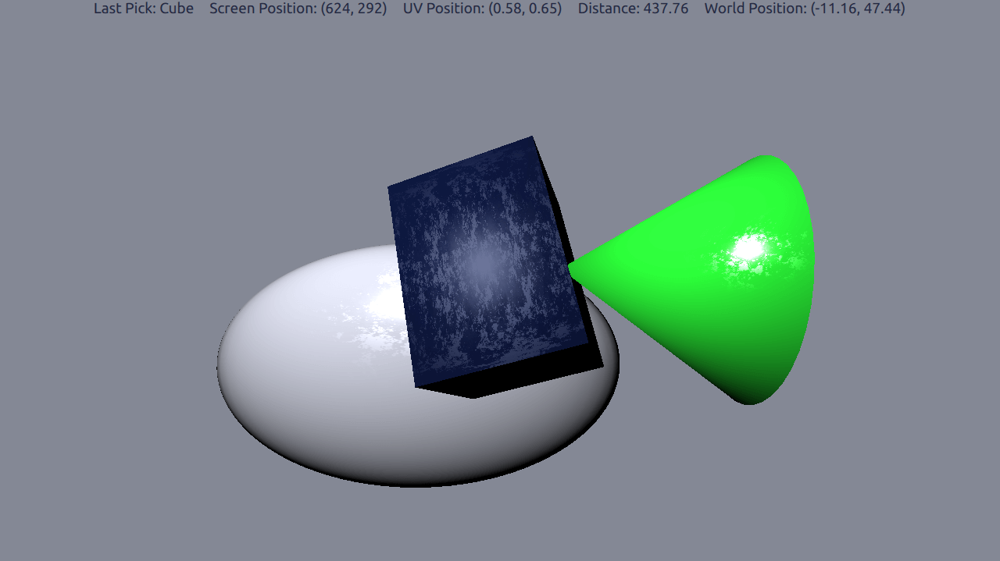

Qt Quick 3D - Picking example
Demonstrates picking of models.
This example demonstrates picking. There are 3 different animated models which can be picked. When a model is picked, the animation is stopped and the model color changed to make it clear which model got picked. Detailed information of the pick result is displayed on the top of the application window.

Making Model Pickable
To make a model pickable, the pickable property needs to be set to true. We also add objectName for the model to be able to display the name of the picked model.
Model { id: cubeModel objectName: "Cube" source: "#Cube" pickable: true property bool isPicked: false
The isPicked property was added to be used to toggle the animation and color.
materials: DefaultMaterial { diffuseColor: cubeModel.isPicked ? "#41cd52" : "#09102b" ... SequentialAnimation on eulerRotation { running: !cubeModel.isPicked
Getting Pick Results
To do the actual picking we need to add a MouseArea to cover the entire View3D.
MouseArea { anchors.fill: view
In the onClicked handler of the mouse area, we use the pick method to get the actual result of the pick.
var result = view.pick(mouse.x, mouse.y);
If the result has a target object, we go through the specifics of the result, and display them in the text field at the top of the application view.
if (result.objectHit) { var pickedObject = result.objectHit; // Toggle the isPicked property for the model pickedObject.isPicked = !pickedObject.isPicked; // Get picked model name pickName.text = "Last Pick: " + pickedObject.objectName; // Get other pick specifics uvPosition.text = "UV Position: (" + result.uvPosition.x.toFixed(2) + ", " + result.uvPosition.y.toFixed(2) + ")"; distance.text = "Distance: " + result.distance.toFixed(2); scenePosition.text = "World Position: (" + result.scenePosition.x.toFixed(2) + ", " + result.scenePosition.y.toFixed(2) + ")";
Files:
Images:
{kind=link}